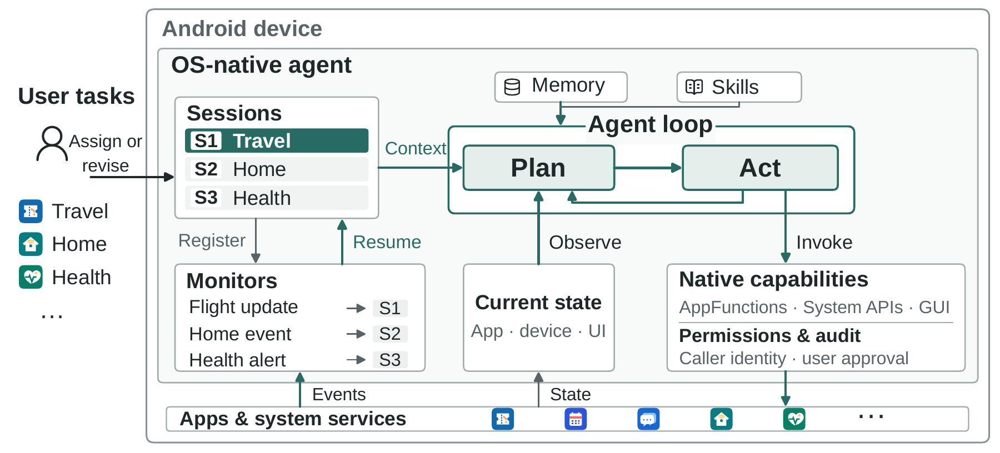
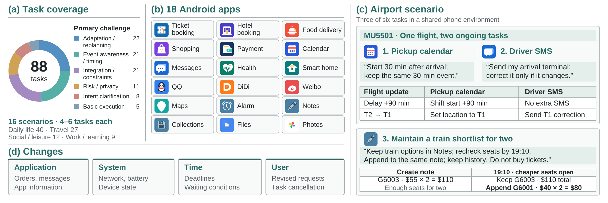

Recorded state readback
get_device_details
device_id:
guest_bedside_lamp
- Room
- Guest Bedroom
- Brightness
- 35%
- Power
- On
Recorded step 105
Android agents · DynamicWorld
Managing User Tasks
in the Dynamic Mobile World
1 The Chinese University of Hong Kong, Shenzhen2 Independent Researcher
The mobile world keeps changing after an agent has acted. The operating system (OS) delivers updates and governs access to device resources, while users coordinate ongoing tasks across applications. Delegating this coordination to agents requires OS support across interactions: access to state changes, cross-application capabilities, and execution under user authorization.
We introduce OS-native agents, recognized by the operating system and integrated into its native state, capability, and trust mechanisms.
See an ongoing task unfold
“Turn the bedside lamp off for repair. When Maya says it is fixed, turn it back on and restore its earlier brightness. Leave the other lights alone.”
Six delegations share one home-repair scenario. Follow repair updates, device outages, a family member’s return and temporary helper access through the recorded OS-native and MobileClaw trajectories.
Open the interactive comparison ↗Recorded state readback
get_device_details
device_id:
guest_bedside_lamp
Recorded step 105
Recorded model reasoning
“The Main Bedroom Bedside Lamp detail page already shows brightness at 35%, so I only need to turn it on without changing any other setting or device.”
action_type: click
x: 306
y: 702
Recorded step 237
Selected trajectories from the repair-complete event. Full benchmark results are reported below; run details and screenshot provenance are available in the viewer.
The framework
The OS already mediates application activity, service access, and permissions across the device. OS-native integration connects the agent to the services that maintain current state and govern its use, including when later events prompt another action.

Receive changes while reasoning is paused. Query current app and system state when work resumes.
Discover available operations and their providers. Compose app functions, system operations, intents, and GUI actions across apps.
Check access under the caller’s identity, obtain confirmation for supported sensitive operations, and record execution and authorization decisions.
Persistent harness. Task context, object references, memory, and skills connect successive interactions to the same delegation. The harness assesses incoming events, resumes relevant work, and updates or closes tasks when requests change.
The benchmark
A replayable benchmark for managing multiple ongoing tasks in a shared Android environment. Controlled changes in applications, system state, time, and user requests require agents to coordinate tasks across interactions; earlier actions shape later decisions.

Results must hold when each requirement applies, including after revisions and cancellation. Unauthorized actions can invalidate a task even when the final state appears correct.
Programmatic checks verify app state and effects. An independent model judge evaluates open-ended content where needed. Formal scores use complete scenarios.
Main results · Table 3
Complete agent systems evaluated on 88 tasks across 16 scenarios.
| Agent system | Success ↑ | Calls ↓ | Reported tokens ↓ | User requests |
|---|---|---|---|---|
| OS-native | 76.1% | 121.50 | 2.81M | 3.13 |
| MobileClaw | 40.9% | 289.56 | 3.42M | 2.44 |
| MobileWorld | 23.9% | 102.38 | 1.53M | 1.44 |
Comparisons cover complete agent systems, including their environment interfaces and task-management mechanisms. Within each model configuration, the named model supplies all agent inference. Resource means include successful and unsuccessful tasks; user requests include supported authorization requests. Result data ↗
Try it yourself
Linux x86_64 with KVM. We recommend 16 GB RAM and 50 GB free disk, plus a model service with tool-call support.
Setup prepares host tools and builds the research apps locally. Configure your model in .env, start the phone, then enter a task in OS-native Agent.
git clone https://github.com/FreedomIntelligence/OSNativeAgent.git cd OSNativeAgent bash osnative setup # Configure your model service in .env bash osnative start
@misc{zhu2026osnative,
title={OS-native Agents: Managing User Tasks in the Dynamic Mobile World},
author={Qiming Zhu and Shunian Chen and Wentao Ge and Zhengyang Tang and Xiaoguang Li and Pinjia He and Benyou Wang},
year={2026},
url={https://github.com/FreedomIntelligence/OSNativeAgent}
}